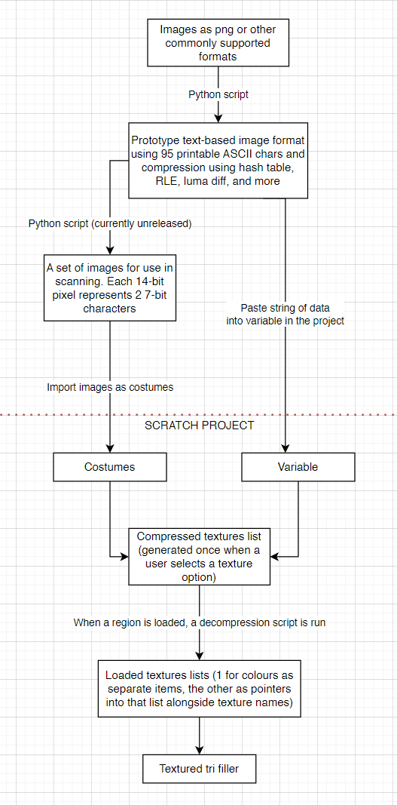

The Mast 3D
Play it here: TurboWarp | Scratch | Standalone (TW packager)

A textured 3D game set on a fictional planet. Explore highly detailed environments and structures and uncover the events that took place. Inspired by Infra and Rain World, among other things.
Controls can be set inside the project, by default it is WASD and mouse click/drag.
General technical details
- Z-up orientation, identical to Blender. Camera faces -Z (directly down) and up/down is around the x axis as well. Camera roll is not supported as it's not needed and just a waste of performance in this use case.
- Rendering uses a textured tri filler created by Bambozzle. This filler uses a depth buffer. No sorting is used.
- A stripped-down version of the project exists as Nuclear Power Plant [3D]. It is recommended you look at that first if you want to learn more or even develop your own games with it.
Textures
This project uses a custom text-based image format developed by myself, with help from Arctenik. This was necessary due to the fact that the textures take up a lot more space than what is allowed to be stored in a Scratch project's project.json, which has a limit of 5MB, including scripts, vars, and anything else necessary to run the project. Costumes and audio are stored separately and have their own limit of 10MB each, no limit on total count. This image format compresses 24-bit RGB images which you can read about in more detail in the linked project description.
The project size limit leaves few options for storing the needed textures. Even with compression, the full-res textures do not fit. I provide a low-res version in the project that can be loaded at any time but the full-res textures must either be scanned or pasted in via a text input box. The pipeline for importing full-res textures can be seen below. Half-res textures are the exact same except there is no branch for image scanning as it doesn't need it.
Additionally it must be noted that an exception is made for the starting Pod region. The player doesn't get to choose the texture quality for it, the full-res texture is automatically loaded from a separate variable storing it.
A compressed texture by itself is pretty useless, it's just a stream of pixel colours. To make it usable, "metadata" is included and this is handled in the above diagram too. The format for the actual string accepted by the project is (spaces separate values):
[texture_name] [number_of_pixels_total] [texture_width] [texture_height] [checksum] [compresed_data]
This repeats for every texture needed.
The checksum is used to ensure texture data is intact. It is just a sum of the compressed data stream with each character being counted using its index in a list (matches ASCII).
Models
The world was created in Blender. I have a single .blend file storing everything and this gets exported to .obj which the project is able to read. Inside the project is a list called WORLD.obj, this is the file with lines as seprate items.
There is a very important naming system being used to specify what each mesh is responsible for:
[region name],[FL/VZ/DY],[room or object subname(if not FL)],[BB (if vz)]
FL is floor
VZ is static visible geometry
DY is dynamic geometry (things that can be moved such as doors)
BB is bounding box and is used by static geometry for only rendering when unoccluded.
There is only 1 floor per region, which is fine as it's not slow and it makes the collision wall generation (for the player's movement) simple. Walls are generated by finding exposed edges (edges that are not shared by 2 adjacent triangles). A line segment is added. Actually, the walls are geometrically stadia extruded along the Z axis.
Regions are split into rooms for improved performance. Rooms are separate objects. The default main room which is always visible will not have a subname, it will just be [region name]_VZ. Any other room must be accompanied by a bounding box to be visible. The bounding box is calculated by the bounds of the tris of the object and can be of whatever you want. I use rectangular prisms to make visualisation easier. Dynamic geometry does not need a bounding box, it will always be visible. A bounding box of size infinity is created automatically for the main room and dynamic geometry.